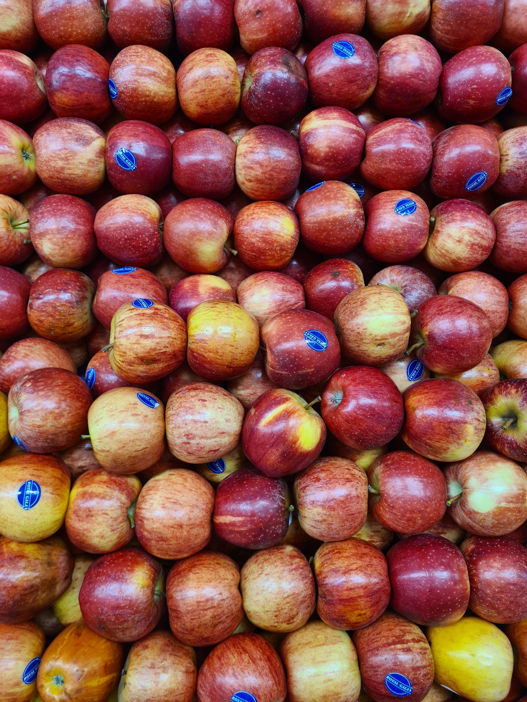

It typically comes in red, green, or yellow varieties. Apples are rich in vitamins, fiber, and antioxidants, which help boost the body's immune system. Consuming apples regularly supports heart health and improves digestion. There is a well-known English proverb: "An apple a day keeps the doctor away.Although apples are primarily fruits of cold-climate regions, they enjoy immense popularity worldwide. Scientifically known as *Malus domestica*, there are over a thousand varieties of apples found across the globe. The natural components present in apples help strengthen teeth and gums, and assist in regulating blood sugar levels. Beyond being eaten raw, they are used to make jams, jellies, juices, and a variety of delicious pies. This fruit is also highly effective for weight loss and for keeping the skin fresh.
